Bosque de Chapultepec: Letzter voller Tag. Der Chapultepec-Park ist mit rund 680 Hektar einer der größten Stadtparks Lateinamerikas. Am Eingang das Denkmal der Niños Héroes: sechs junge Kadetten, die 1847 bei der Verteidigung der Burg Chapultepec gegen US-Truppen fielen.
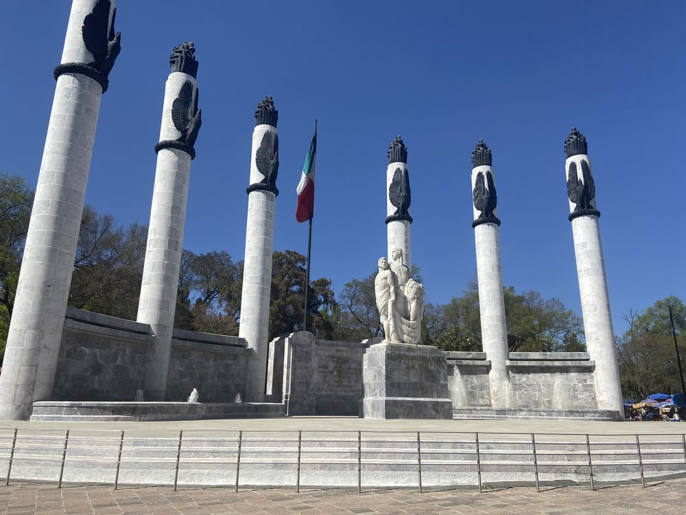
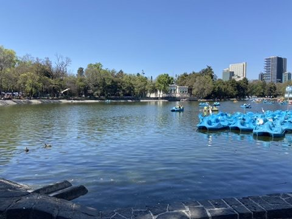
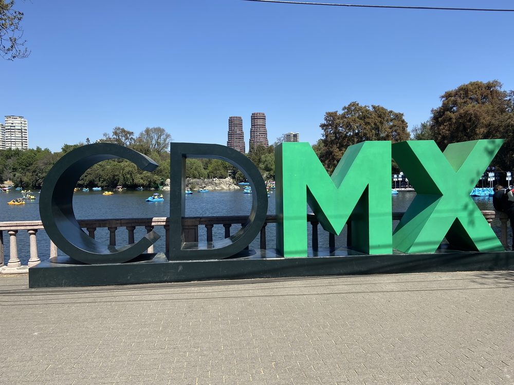
Museo Nacional de Antropología: Das wichtigste Museum Mexikos, 1964 von Pedro Ramírez Vázquez gebaut. Im Innenhof trägt eine einzige Säule das riesige Dach „El Paraguas", von dem Wasser herabregnet. In über 20 Sälen: von den Olmeken bis zu den Azteken, dazu die lebendigen indigenen Kulturen von heute.
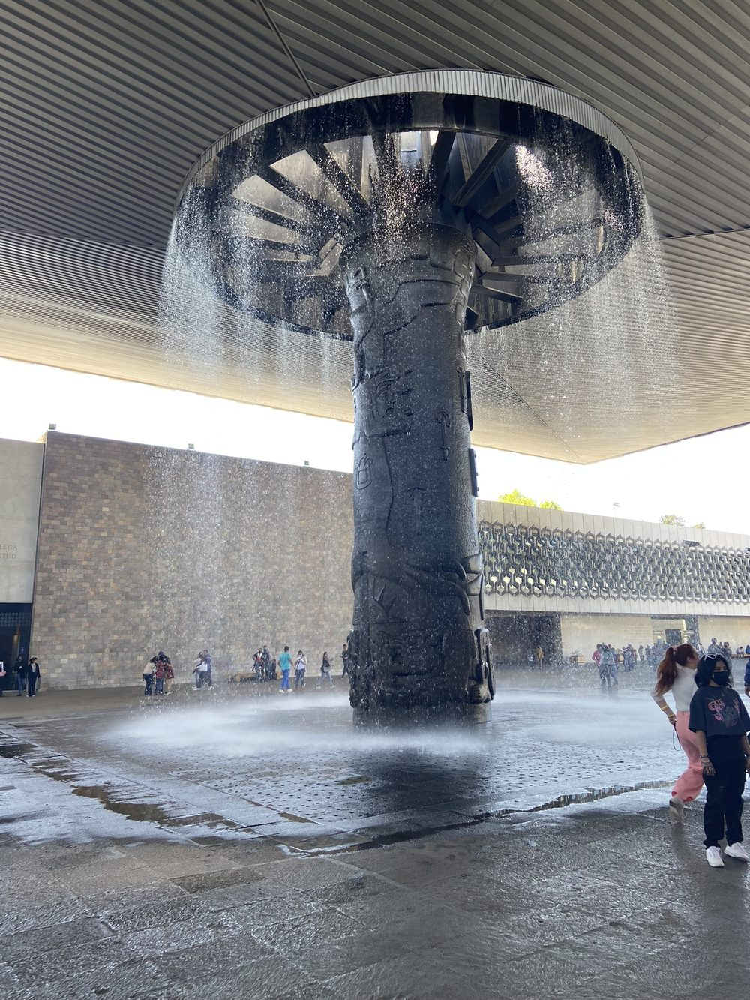
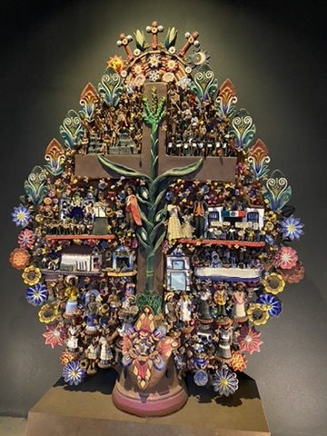
Árbol de la vida: Keramik-Lebensbaum, typisch für Metepec.
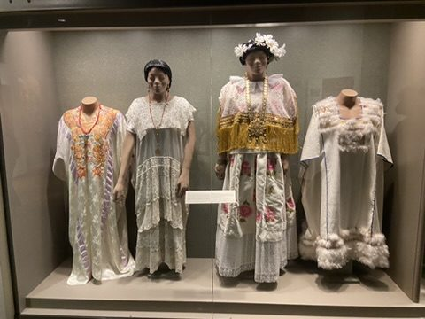
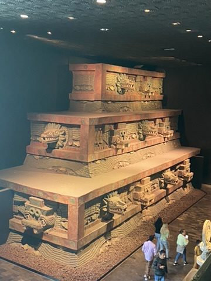
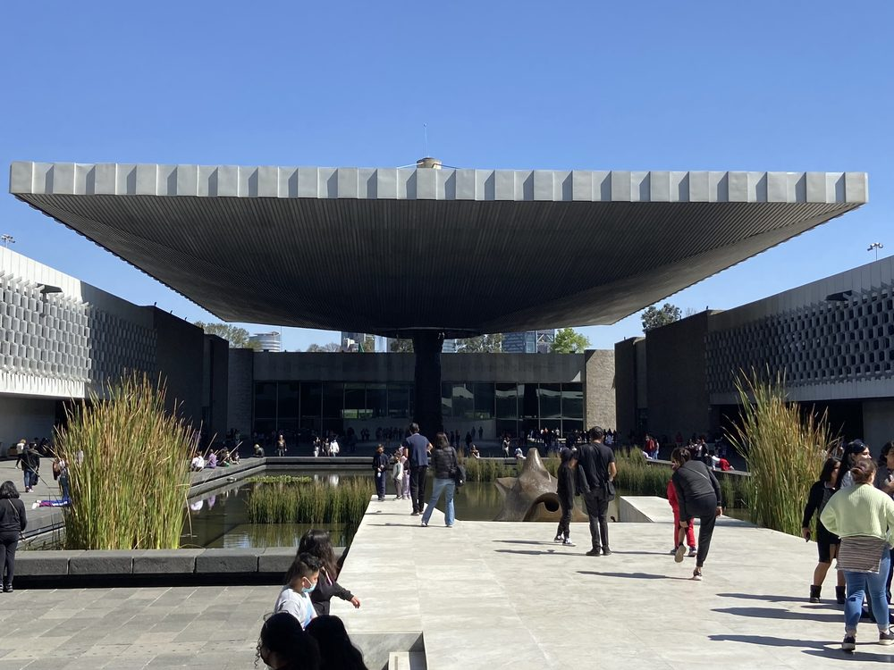
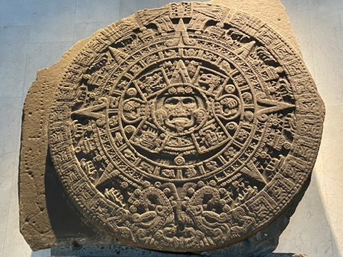
Der Sonnenstein: 24 Tonnen Basalt, 3,6 m Durchmesser, 1790 am Zócalo ausgegraben – das berühmteste Stück des Museums.
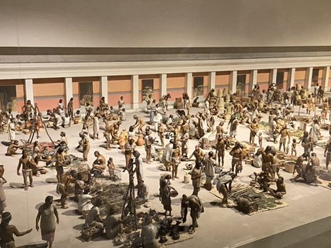
Diorama des Marktes von Tlatelolco, den die spanischen Eroberer als größer als jeden Markt Europas beschrieben.
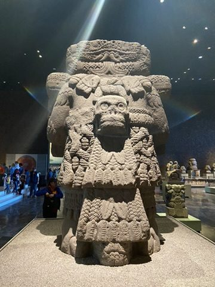
Coatlicue, Mutter der Götter, mit Rock aus Schlangen.
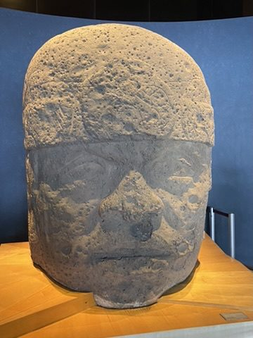
Olmekischer Kolossalkopf – rund 3.000 Jahre alt.
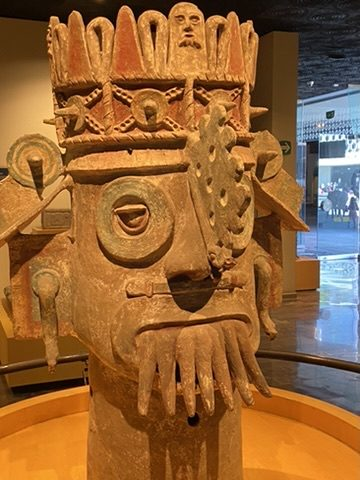
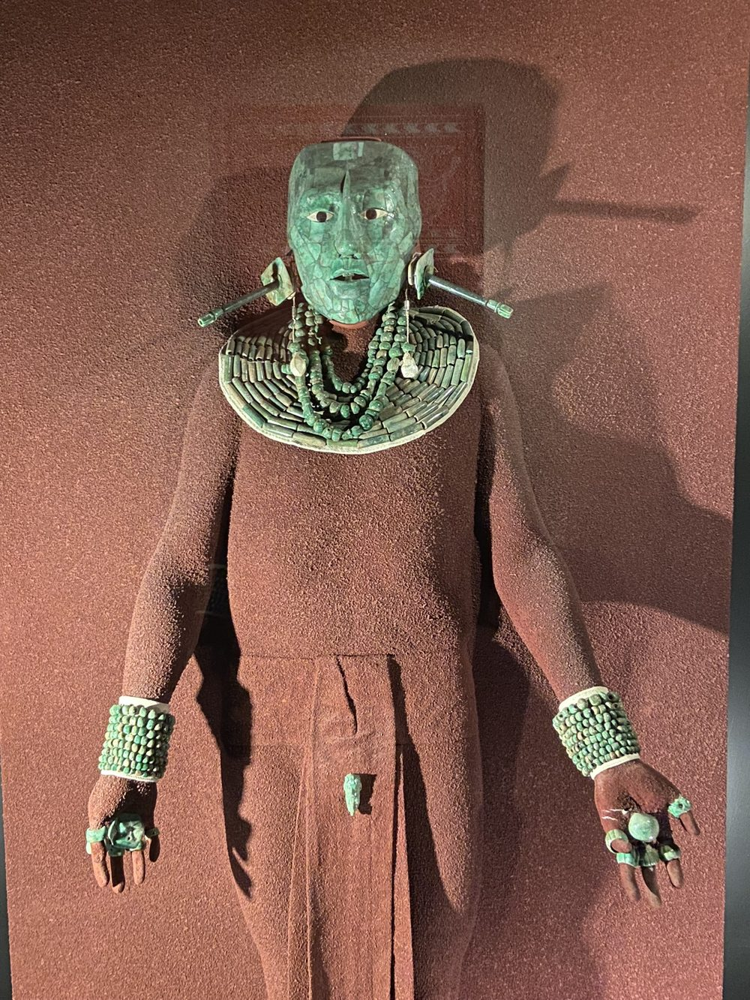
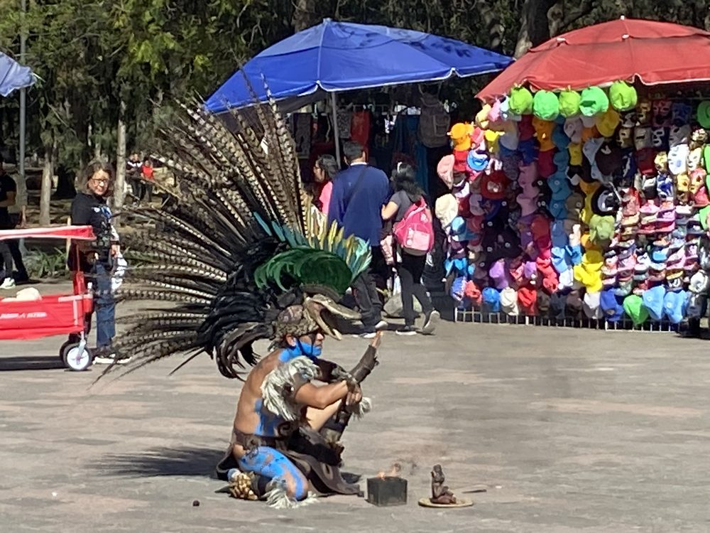
Zum Abschied tanzen vor dem Museum Concheros in Federschmuck – Tradition, die bis heute lebt.
Abschied: Am nächsten Morgen, Montag, 6. Februar, geht es früh zum Flughafen und zurück nach Frankfurt. Siebzehn Tage zwischen Hauptstadt, Bergen, Karibik und Golfküste, drei Maya-Städte – und eine lange Liste an Orten, für die wir wiederkommen müssen.